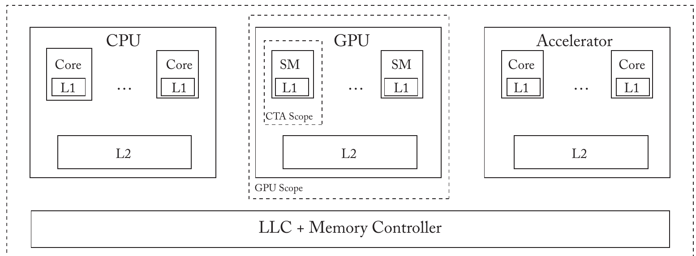

Memory-Model cache-coherence GPU

Consistency and Coherence for Heterogeneous Systems
Most systems today are not only CPUs, they also have accelerators, the most common one being the GPU (recently however, TPU and other neural accelerators or FPGAs have become more common). These systems are referred to as heterogenous systems. The challenge becomes how can we synchronize and communicate within and across the accelerators. One trend is to expose a global shared memory interface across the CPU and the accelerator.
We assume that CPUs and GPUs have their own private physical shared memory that can be accessed via an API. Usually, each core has it owns private L1 cache and a shared L2 cache. They (CPU, & GPU) may also have a memory-side last-level-cache, that is usually non-inclusive.
The shared memory poses an important question: how does the L1 and L2 cache across the host and device synchronize and how are their caches coherent.
GPU Consistency And Coherence
We first start by understanding briefly the GPU architecture.

Early days
GPUs, originally, we made for parallel graphics workloads. This mend that a workload involve computing independently each of the pixels that constitute the display. Thus, the workloads are characterized by a very high degree of data-parallel and low degree of data shared, synchronization and communication.
GPU Architecture
GPUs, have tens of cores called Streaming multiprocessors (SM). Each SM has many many warps with each warp consisting of 32 threads (all threads in a warp share the same program counter, and stack). The threads mapped to an SM all share the same L1 cache and a local scratchpad memory. All of the SMs share an L2 cache. Even though threads in a warp share the same PC, they can still execute independent thread-specific paths using mask bits which specify which threads are active and which ones should not execute, know as Single Instruction Multiple Threads (SIMT).
GPU Programming Model
Analogous to the CPU Instruction Set Architecture, the GPU also has a virtual ISA. NVIDIA’s virtual ISA, for example is known as Parallel Thread Execution (PTX). CUDA, for example, is the high level abstraction that then gets compiled to the NVIDIA ISA.
CUDA, chooses to expose its hierarchical nature to the programmer via a thread hierarchy know as scopes. Unlike CPU threads that are unique treated as “equal”, GPU threads are clustered together into Cooperative Thread Arrays (CTA). A CTA scope refers to the set of threads from the same CTA. These threads are guaranteed to be mapped to the same SM and hence share the same L1 Cache. Thus, CTAs are mapped to the same memory hierarchy level implicitly (the L1) cache. A GPU score refers to the set of threads on the same GPU. They could be from different CTAs and share the L2 cache. Thus the GPU scope is implicitly the L2 cache scope. A system scope refers to all the threads across the host and device. Thus the system scope is implicitly mapped to the LLC or unified shared memory if there is no shared LLC.
How can two threads belonging to different CTAs sync? This is what GPU consistency is all about.
GPU Consistency
GPUs support relaxed memory consistency model which (similarly to CPUs) allow for store and load operations to be reordered and tend to be organised using FENCE instructions. However, because of the lack of a Cache Coherence in a GPU, the FENCE semantics are different. Remember that the FENCE instruction in a CPU insures that a load and store must happen before the fence
// assuming x = 7
y = load(x)
y+=1
store(x, y)
load(x)
print(x) // could be 7 or 8
y = load(x)
y+=1
store(x, y)
FENCE
load(x)
print(x) // must be 8
A GPU FENCE provides similar semantics but only with respect to other threads belonging to the same CTA. A corollary of this is that the GPU store is not atomic. This means that in a GPU a store may become visible to a thread belonging to the same CTA before other threads.
GPGPU Consistency & Coherence
We have defined what consistency and coherence is for GPUs, now we need to implement it. One way would be to use a multicore CPU-like approach (using spoofing and MESI for example). However they are ill-suited for GPUs for two main reasons:
- The CPU-like cache invalidation would amount to a crazy amount of traffic overhead on the GPU. That is because the aggregate of all the L1 caches tend to be greater than the size of the L2 cache. A standalone inclusive directory would not only incur a large are overhead due to duplicate tags, it would also have a high complexity. On the other hand, the embedded inclusive directory would result in significant of recall traffic upon eviction.
- Because GPUs have thousands of active threads, there is a need to track a correspondingly high number of coherence transactions, which would cost significant overhead.
Without writer-initiated invalidation, how can a store propagate to other non-local L1 caches. It will be mentioned later the proposal of a self-invalidation where a process invalidates a line in its local cache to ensure that the stores from other threads become visible. The book argues that such a protocol efficiently enforces a relaxed consistency model directly rather than enforcing a consistency-agnostic invariant such as the SWMR invariant.
Temporal Coherence
The key idea is that each reader brings a cache block for a finite period of time called the lease, at the end of which, the block is self-invalidated. There are two variants: (1) a consistency-agnostic variant that enforces SWMR, in which a writer stalls until the lease of the block expires; and (2) a more efficient consistency-directed variant that enforces a relaxed memory model, where FENCE stalls. We assume that the L2 cache is inclusive: a block not represented by the L2 implies it is not in any local L1. We also assume that L1 uses a write-through/no write-allocate policy (writers must write directly to the L2 (write-through) and a write to a block that is not present in the L1 does not allocate a block in the L1)
Consistency-Agnostic Temporal Coherence
Instead of invalidating on a write, protocol has a writer wait until all of the shares have evicted the block before writing to it. By waiting, the protocol ensure that there are no concurrent readers at the instant that the writer success. How long should the writer wait, and how can he know? Temporal coherence achieves this by leveraging a global notion of time. It requires that each of the L1s and the L2 have access to a register that keeps track of global time. On an L1 miss, the reader predicts how long it expects to hold the block in the L1 and informs the L2. Every L1 cache block is tagged with a timestamp (TS) that holds the lease of that block. A read on an L1 block with a current time greater than its lease is treated as a miss
Each block in the L2 is tagged with a timestamp. When a reader consults the L2 on an L1 miss, it informs the L2 of its desired lease; the L2 update the TS for the block.
Every write is written through the L2; the write request accesses the block’s TS held in the L2 and if the TS corresponds to a time in the future, the write stalls until this time. The stalling is what ensures that no shares of the block exist when the write performs in the L2 cache, thus ensuring SWMR.
Protocol Specifications
The L1 has two states
- Invalid
- Valid
The L1 communicates with the L2 using
getV(t),write writeV(T)requests. The first asks for a block and accepts a TS as a param. The write request asks for the specified value to be written through to the L2 without bringing back the block to the L1. The write(T) request is used for writing to a block that is already valid in L1 and cries a TS holding its current lease as a param.
The L2 has four states:
- Invalid - the block is neither in the L2 nor the L1
- Private - the block is present in exactly on L1
- Shared - it may be present in one or more L1s
- EXPired - the block is present in the L2 but not valid in any L1
There is a corner case however where a writeV(t) message from a private block is delayed such that the block is now held privately but in a different SM. To combat this, every writeV(t) message, carries a TS with the lease of for a block and a match with the TS held in the L2 indicates a more straightforward case A mismatch indicates the latter, in which case the writeV(t) request stalls until the block expires, at which time the L2 is update and an ack is sent back to the L1. A writeV(t) or a write request received in sate S, on the other hand, will have to always wait until the block’s lease sate at the L2 expires.
Finally, an L2 block is allowed to be evicted only in the EXP state, because writes must know long to stall in order to enfroe SWMR.
Consistency-Directed Temporal Coherence
Temporal consistency enforces SWMR but at a significant cost. Every write to an unexpired shared block needs to stall at the L2 controller. Since the L2 is shared, stalling can indirectly affect all the threads, reducing throughput. The idea is, instead of having writes be synchronously seen to other threads, can we make it async without violating consistency? A relaxed model such as in Relaxed Memory Consistency XC mandates only the memory ordering indicated by the programmer via FENCE. Such a model for wrtes to propagate to other in async manner.
When a write request reaches the L2 and the block is shared, the L2 replies back to the thread initiating the write with a TS associated with the block. We refer to this as Global Write Completion TIME GWCT, as this indicates the time until which the thread must stall upon hitting a FENCE, to ensure the write has become globally visible.
For each thread mapped to an SM, the SM keeps track of the max of GWCTs returned for the writes in the per-thread stall-time register. Upon hitting a FENCE, stalling the thread until this time ensure that all of the write before the FENCE have become globally visible.
Protocol Specifications
This is similar to the consistency-agnostic variant. The main difference with the L1 controller is due to the fact that write-Acks from the L2 now carry GWCTs. Accordingly, upon receiving a Write-Ack, the L1 controller extends the stall-time if the incoming GWCTs is greater than the currently held one for that thread. The main different with the L2 controller is that Write, requests do not induce a stall; instead, the write is performed and a GWCT is returned along with the write-ACK.
Summary & Limitations
The benefit with the latter is that it eliminates expensive L2 stalling. Instead writes stall at the SM upon hitting the FENCE. More omptimisation are possible to reduce stalling, however there are some critical limitations with temporal coherence.
- Supporting a non-inclusive L2 is cumbersome, because the temporal coherence requires that a block is valid in one or more L1s must have its lease time available to the L2.
- It requires global TS. With modern GPUs being large, maintaining a global TS may become difficult. A recent proposal however has show how a variant of temporal coherence can be implemented without using global TS
- Performance is sensitive to the lease period. One that is too shored increases the L1 miss rate, and one that is too long causes the writes to stall for longer
- Temporal coherence cannot take advantage of scoped sync. Store involved in CTA-scoped syn need to be written to the L2, but here, every write is to the L2 due to the write-through
- TC involves TS which is complex to implement and to verify its correctness.
Release Consistency-Directed Coherence
TC is good but on the other hand is cumbersome. Here we discuss a different approach to GPGPU coherence called Releace-directed Coherence (RCC) that directly enforces release consistency which differs from XC by distinguishing acquires from releases, whereas XC treats all sync the same.
RCC compromises on flexibility in that it can only enforce variants of RC, but is simpler and can exploit scope information and can be made to work with non-inclusive L2 caches.
RC: Non-Scoped & Scoped Variants
RC has special atomic operations in one directed ordering by a FENCE. RS has a release (Rel) store and an acquire (Acq) load that enforces the following order:
- Acq load → laod/store
- Load/store → Rel store
- Rel store/Ac load → Rel store/Acq load
Considering the message passing example as seen below: St2 as a release ensures that St1→St2. The acquire (Ld1) reads the value written by the release st2. Doing so the release syncs with the acquire ensuring the St2→Ld1 in the global memory order. This ensures that r2 will never be zero .
T1:
St1: St data1 = NEW
St2: Rel St flag = SET
T2:
Ld1: Acq Ld r1 = flag
B1: if (R1 != SET) goto Ld1
Ld2: Ld r2 = data1
// assuming that all is inited as 0 can r2 == 0
In this model, without scopes, a release syncs with an acquire as long as the acquire returns the value written by the release regardless of whether the threads belong to the same or different scope. Thus, Ld2 will see the new value regardless of the fact that T1 and T2 might not belong to the same CTA.
A Scoped RC Model
In this model, each atomic is associated with a scope. A release is said to sync with an acquire if:
- The acquire load returns the value written by the release store
- The scope of each atomic includes the thread executing the other op
For example: a release of CTA scope is said to sync with an acquire of CTA scope if two threads executing the acquire and release belong to the same CTA. On the other hand, a release of GPU scope syncs with an acquire of GPU scope irrespective whether the two threads are from the same CTA.
To formalize this more, we can use partial order. Not all conflicting operations are ordered, only releases and acquires that sync with each other are ordered. This is how NVIDIA approaches this in the PTX memory consistency model.
Release Consistency-Directed Coherence (RCC)
This protocol will directly enforces RC instead of SWMR. This protocol does not propagate writes to other threads. Instead, writes are written to the L2 upon a release and become visible to another thread when that thread self-invalidates the L1 on the acquire and pulls in the new values from the L2.
We assume write-back/write-allocate L1 caches. Also, for now, ignore and assume that sync is between two threads from different CTAs. Later we talk about intra-CTA sync. The main steps involved in RCC are as follows:
- Load and stores that are not marked with acquire or release behave like normal loads and stores in a write-back/write-alloc L1 cache
- A Load marked acquire reads a fresh copy of the block from the L2. Then all valid blocks in the L1, other than the one read by the acquire, self-invalidate, ensuring Acq load → load/store
Exploiting Scopes
If all atomic ops are of GPU scope, the protocol works as is, because the protocol already pushes all of the dirty data to the L2 on a release and pulls from the L2 upon an acquire. The RCC can take advantage of CTA scopes: a CTA-scoped release need no write-back dirty blocks to the L2; a CTA-scoped acquire need not self-invalidate any of the blocks in the L1.
Protocol Specifications
There are two stable states:
- Invalid
- Valid
The L1 communicates with the L2 using
GetVandwrite-backrequests.GetVasks for a specified block to be brought to the L1 in valid state. This GetV does not carry a TS param; a block brought by the L1 via GetV is self-invalidated upon the acquire. The Write-back request copies the specified block from the L1 to the L2 without evicting the block from the L1. If the release and acquire are of GPU scope, the protocol must write-back all dirty blocks on a release and self-invalidate all valid block on acquires. R/A of CTA scope behave like ordinary stores and loads in a write-back/write-alloc cache.
Note: that the protocol does not rely on cache inclusion. A valid L2 block can be silently evicted without informing the L1. Intuitively, this is because the L2 does not hold any critical metadata such as sharers or ownership information.
Exploiting Ownership: RCC-O
Releases (force all dirty lines to be written to the L2) and acquires (causes all valid lines to be self-invalidated) are expensive in the simple protocol. One way to reduce this cost is to track ownership, so that owned blocks do not need to be self-invalidated nor, written-back on an acquire/release.
The idea is to add an Owned state - every store must obtain ownership of the L1 cache line before a subsequent release. For each block, the L2 maintains the owner which refers to the identity of the L1 that owns the block. Upon a request for ownership, the L2 first down-grades the previous owner, causing the owner to write-back the dirty data. After sending the current data to the new owner, the L2, updates the ownership. Because a block is in the O state, it implies the absence of remote writers, there is no need to self-invalidate an owned block on an acquire. Because the L2 tracks owners, there is no need to write-back an owned block upon a release.
Even in the absence of scope information, ownership tracking can help in reducing the cost of intra-CTA acquires.
Protocol Specification
The main difference is in the addition of the Owner state. Every store in V or I sate has to contact the L2 controller and request ownership. Having obtained ownership, any subsequent store to that line is potentially stale at the L2. For this reason, when the L2 receives a request for ownership of a line already in the O state, the L2 first requests the previous owner to write-back.
Upon a release (CTA-, GPU- or non-scoped) there is no need to write-back dirty data from the L1 to the L2. Instead, the protocol merely requires that all previous stores must have obtained ownership. Upon acquire (GPU- or non-scoped), only non-owned blocks must self-invalidate. If the acquire is of CTA scope or the acquire sis to a owned block, it implies that the sync is intra-CTA and there is no need to self-invalidate.
Because the protocol hinges on the L2, maintaining ownership information an L2 block in O state cannot be silently evicted; instead, it must first downgrade the current owner, requesting a write back to the block.
Lazy Release Consistency-Direct Coherence: LRCC
In the absence of scope information RCC treats acquires and releases conservatively. In the RCC-O and intra-CTA acquires can be detected efficiently and handled but releases are treated conservatively. LRCC enables efficient releases. In LRCC, ordinary stores do not obtain ownership, only release stores obtain ownership on behalf of the store. When a block is released is later acquired, the sate of the block at the time of the acquire determines the coherence actions.
- if the block is owned by the L1 acquiring thread, it implies that the sync is intra-CTA (no need to self-invalidate).
- if the block is owned by a remote L1 it implies inter-CTA sync.
In the latter, dirty cache blocks in that remote L1 are first written back and the valid blocks in the acquiring L1 are self-invalidated. Thus, by delaying coherency actions until an acquire LRCC is able to handle intra-CTA sync very efficiently.